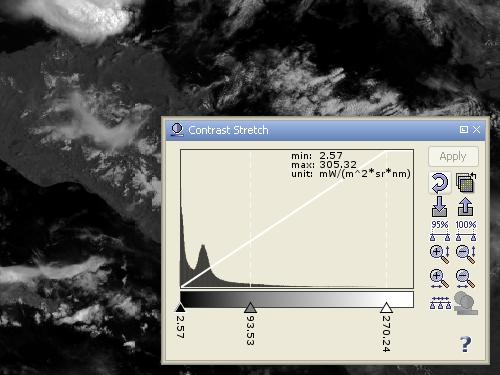
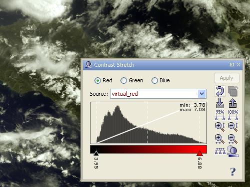

| The Contrast/Palette Window | |
When you are looking at satellite data, you might be interested in a certain
area of the image. If this area shows few dynamics in the values, you'd like
to adjust the contrast or even assign colors to value ranges. This can all be
done with the contrast/palette dialog of VISAT.
A click on the  icon in the main toolbar or selecting "Contrast Stretch /Color Palette"
from the View menu brings up the following window:
icon in the main toolbar or selecting "Contrast Stretch /Color Palette"
from the View menu brings up the following window:

A histogram is used to visualize the distribution of sample values of the current band. You can see three sliders on a greyscale color palette: a black one on the left, a white one on the right, and a grey one in the middle. They all give their color to the color palette. As the white diagonal line in the histogram indicates, the greyscale is applied linearily to the band image view. Additionally, the number below the slider indicates the sample value assigned to the position of the slider in the histogram. You may also exactly adjust the slider sample value by clicking on it's displayed text. By moving a slider with the mouse you can easily change it's sample value. The colors in the palette will change accordingly. You can also click between two sliders in order to move the nearest slider of both under the mouse cursor. All changes of the color palette will enable the 'Apply' button which you have to press in order to make changes effective.
If the current view is a RGB image view the window switches into RGB mode:

The contrast stretching functionality in RGB mode is exactly the same with the exception that it applies only to the selected RGB component. Additionally you can change the source band for each of the RGB components. Default (virtual) source bands are created from the RGB profiles set in the preferences dialog.
A click on the  icon opens a dialog where you can select
the bands to which you can assign the current color palette. If the destination band has a similar
pixel value range, the slider positions are exacly preserved otherwise they are proportionally distributed
over the valid range of the destination band.
icon opens a dialog where you can select
the bands to which you can assign the current color palette. If the destination band has a similar
pixel value range, the slider positions are exacly preserved otherwise they are proportionally distributed
over the valid range of the destination band.
A click on the  icon adjusts the sliders to cover 95% of all pixels in the band.
icon adjusts the sliders to cover 95% of all pixels in the band.
A click on the  icon adjusts the sliders to cover 100% (the full range) of all pixels in the band.
icon adjusts the sliders to cover 100% (the full range) of all pixels in the band.
A click on the  icon distributes the inner sliders evenly between the first and the last slider.
icon distributes the inner sliders evenly between the first and the last slider.
If you right-click on a slider, a context menu will pop up. The content of
this menu depends on the number of sliders currently present. Some entries are
disabled when the action cannot be performed.
There you may choose from:
- 'Add new gradient slider' which is described below,
- 'Remove gradient slider' removes the slider currently selected,
- 'Center position': this will center the slider between the two adjacent ones,
- 'Center gradient': this will assign the center color of the gradient between
the two adjacent sliders to the slider.
Double-click on the number below the slider. A dialog box appears where you can enter a different value for the sample vlue.
Right-clicking into the color palette gives you a context-menu 'Add new gradient slider'.
Click on the  icon to zoom in vertically or on the
icon to zoom in vertically or on the
 icon to
zoom into the histogram horizontally.
icon to
zoom into the histogram horizontally.
Click on the  icon to zoom out vertically or on the
icon to zoom out vertically or on the
 icon
to zoom out of the histogram horizontally.
icon
to zoom out of the histogram horizontally.
You can show/hide image enhancement pane by clicking the  icon.
It is enabled for RGB images only. The image enhancement comprise gamma correction and histogram
matching.
icon.
It is enabled for RGB images only. The image enhancement comprise gamma correction and histogram
matching.
A gamma value can be entered for each RGB component in order to adapt the transfer function which quantizes (geophysical) source sample values to image sample values. For MERIS L1b, a gamma value of 0.7 for the blue channel yields to more realistic results.
It is sometimes desirable to transform an image so that it's histogram matches that of a specified functional form. It is now possible to apply an equalized or normalized histogram matching to RGB images which can drastically improve image quality.
If you click on a slider, a color chooser window appears. Select the color you want to assign to that slider. Click OK. The color palette below the histogram now shows a gradient from the new color to the one of the adjacent slider. This function is not available if the current image is a RGB image.
This screenshot shows the dialog after having:
- auto-adjusted the histogram to 95%
- clicked several times on the vertical zoom icon
- added two more sliders
- assigned colors to all sliders.
The Contrast palette Window offers the possibility to store the settings for later use.
Note: VISAT's contrast stretch / color palette tool is now supported by a couple of predefined color
palettes. They are stored in BEAM-install-dir/auxdata/color_palettes. For convenience, the
import/export file choosers in the contrast stretch / color palette dialog now use this folder by default.
Click the  icon to import color palette definition files and the
icon to import color palette definition files and the  icon to export the current contrast stretch / color palette settings.
icon to export the current contrast stretch / color palette settings.
Click on the  icon
to revert the dialog box to default values.
icon
to revert the dialog box to default values.
Clicking on the icon brings up the Help System with the contextual help page already opened.